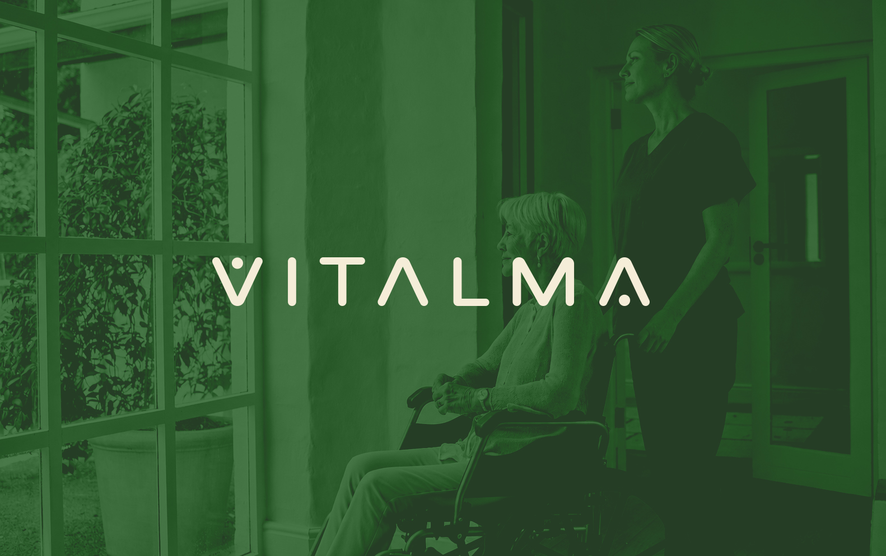

Logo funguje na světlém i tmavém podkladu — v jemné krémové verzi na fotografii i v sytě zelené. Přejeďte myší a porovnejte obě varianty nasazení.

↔ Přejeďte myší přes obrázek pro porovnání variant